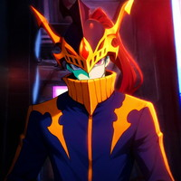
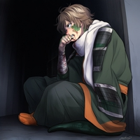

鋼音 メタ

月宮 エス
グレちゃん

ラスター・ブロト
内藤 芽亜

粗朧 義弘
①：
あなたの攻撃発動は常に【ペネトレイション】の効果を適用する。
②：
あなたが〔モヒカン〕に攻撃する場合、
ダメージ判定に＋１５のボーナスを得る。
ダメージ判定に＋１５のボーナスを得る。
傷つき傷つけなければ、守れないものだってある。
そいつ殺せない
○：
自由タイミングで宣言できる。
このバトル中、あなたは【精神異常】を発症し、以下の効果を得る。
●【抵抗】＋１０。
●攻撃へ常に【殺人者：①】を適用する。
●命中判定に失敗する毎に、以降の命中判定に【＋１d】のボーナスを得る。
このバトル中、あなたは【精神異常】を発症し、以下の効果を得る。
●【抵抗】＋１０。
●攻撃へ常に【殺人者：①】を適用する。
●命中判定に失敗する毎に、以降の命中判定に【＋１d】のボーナスを得る。
恋は盲目。愛は……。
この特性の②の効果はシナリオ中に１度しか使用できない。
①：
あなたのアタッチメント【機巧令嬢】の効果は以下となる。
●【力技】【俊敏】の判定時、その判定固定値に【能力精度】をボーナスとして得る。
●【力技】【俊敏】の判定時、その判定固定値に【能力精度】をボーナスとして得る。
②：
あなたのアタッチメント【マジンガーブレード】の効果は以下となる。
●この攻撃に【SPE/奥義】を適用する。
あなたが【付加効果/性質系】を適用している場合、さらに【K/英雄】を適用する。
【AE/死力】を使用したセッション中、この効果は使用できない。
●この攻撃に【SPE/奥義】を適用する。
あなたが【付加効果/性質系】を適用している場合、さらに【K/英雄】を適用する。
【AE/死力】を使用したセッション中、この効果は使用できない。
①：
あなたが【９点】以下のダメージを受ける場合に発動する。
そのダメージを無効化する。
そのダメージを無効化する。
②：
あなたがダメージ判定を行った場合、リザルト終了時に以下の効果から１つを選んで適用できる。
●このバトル中、あなたはダメージ判定と命中判定に【+10】のボーナスを得る。この効果は戦闘不能で消滅する。
●次のR中、あなたは【SPE/瞬動】を得る。この効果は戦闘不能で消滅する。
●同シーン中のユニット１体のHPを【5】減少させる。
●このバトル中、あなたはダメージ判定と命中判定に【+10】のボーナスを得る。この効果は戦闘不能で消滅する。
●次のR中、あなたは【SPE/瞬動】を得る。この効果は戦闘不能で消滅する。
●同シーン中のユニット１体のHPを【5】減少させる。
この特性の②の効果はセッション中に１度しか使用できない。
①：
このユニットが【AE/行動放棄】を行う場合、代わりに以下の効果を適用する。
●１Rの間、このユニットの【行動値】は【９】となり、このユニットが受ける全てのダメージは半分になる。
●１Rの間、このユニットの【行動値】は【９】となり、このユニットが受ける全てのダメージは半分になる。
②：
このユニットがダメージロールを行ったポストアクションに宣言できる。
敵全体に威力【１０d】の物理攻撃を行う。
※全体攻撃の共通ルールとして、全体攻撃によるダメージ判定は装甲値適用前の時点で半減する。
敵全体に威力【１０d】の物理攻撃を行う。
※全体攻撃の共通ルールとして、全体攻撃によるダメージ判定は装甲値適用前の時点で半減する。
①：
INフェイズ終了時、任意の味方2人を選び、そのIN値を同じにすることができる。
②：
あなたが【SPE/奥義】を適用してダメージ判定を行う場合に適用する。
直前のアクションで味方が同ユニットにダメージ判定を行っていた場合、このダメージ判定は【あなたの増強活性】分のボーナスを得る。
直前のアクションで味方が同ユニットにダメージ判定を行っていた場合、このダメージ判定は【あなたの増強活性】分のボーナスを得る。
③：
あなたが【SPE/奥義】を適用してダメージ判定を行った場合に適用する。
直後のアクションで味方が同ユニットにダメージ判定を行う場合、そのダメージ判定は【あなたの増強活性】分のボーナスを与える。
直後のアクションで味方が同ユニットにダメージ判定を行う場合、そのダメージ判定は【あなたの増強活性】分のボーナスを与える。
①：
味方にアイテムの効果が適用された場合に適用できる。あなたにもその効果を適用する。
（アイテム使用前に適用するか否かを宣言し、適用する場合は反動ダメージや臨界ロールも適用する）
（アイテム使用前に適用するか否かを宣言し、適用する場合は反動ダメージや臨界ロールも適用する）
②：
あなたの攻撃が倍差命中した場合、そのダメージ判定ボーナスは【+1d】ではなく、【+2d+4】となる。
①：
セッション開始時、あなた以外の味方が所持する消費アイムを1つ選ぶ。そのアイテムはあなたの消費アイテムとなる。
②：
あなたが参加するセッションのクリア報酬は【①で取得したアイテムの価格】だけ増加する。
③：
あなたの攻撃が倍差命中した場合、そのダメージ判定ボーナスは【+1d】ではなく、【+2d+4】となる。